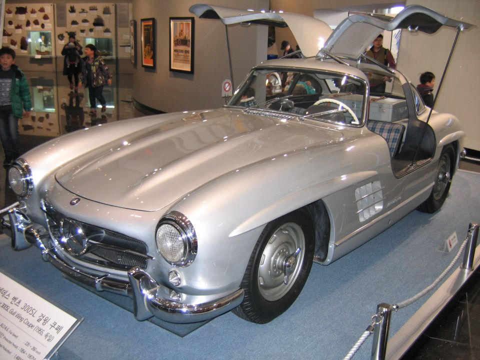
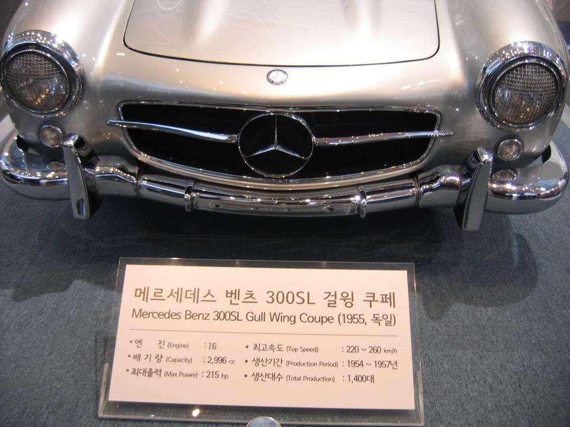
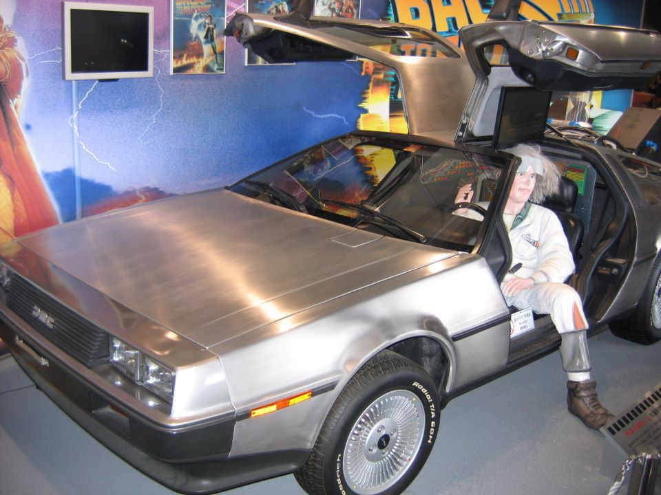

3월 초에 식구들과 자동차박물관을 찾았다. 원래는 아이들이 좋아할 것 같아서 갔는데 그렇지만은 않았다. 옛날식, 즉 구식인데도 한번씩 좋아지는 게 있다. 이런 거도 그 중 하나. Sometimes I got fascinated by old-fashioned thingies. This is one of them.
1955년식 메르세데스-벤츠 300SL Gullwing Coupé. 3월초에 삼성 자동차박물관에서(Taken from the Samsung Cars Meseum early in March).


아래는 1985년 영화 Back to the Future의 명물 들로리안(DeLorian)이다. 도장을 안하고 상용으로 출시된 독특한 차. 그러나 영화와 함께 그때 10대들은 열광했을 걸. This is the famous Delorian from the movie Back to the Future, 1985. It was released at the market without painting its body. But I guess teenagers those days were all fascinated by the movie.

댓글
댓글을 불러오는 중입니다.